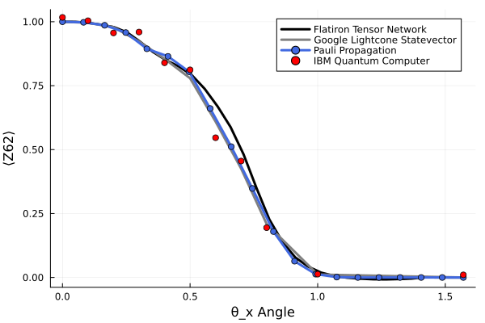

3. Utility Example
using PauliPropagation
using Base.Threads
using Plots[36m[1m[ [22m[39m[36m[1mInfo: [22m[39mWaiting for another process (pid: 4691) to finish precompiling Plots [91a5bcdd-55d7-5caf-9e0b-520d859cae80]. Pidfile: /home/runner/.julia/compiled/v1.13/Plots/ld3vC_e67vQ.ji.pidfile
[36m[1m[ [22m[39m[36m[1mInfo: [22m[39mWaiting for another process (pid: 4691) to finish precompiling IJuliaExt [388d8a6b-6fe4-50b5-a981-2e7a5d676f34]. Pidfile: /home/runner/.julia/compiled/v1.13/IJuliaExt/bAMj0_e67vQ.ji.pidfile
[36m[1m[ [22m[39m[36m[1mInfo: [22m[39mWaiting for another process (pid: 5441) to finish precompiling IJuliaExt [388d8a6b-6fe4-50b5-a981-2e7a5d676f34]. Pidfile: /home/runner/.julia/compiled/v1.13/IJuliaExt/bAMj0_e67vQ.ji.pidfile
[36m[1m[ [22m[39m[36m[1mInfo: [22m[39mPrecompiling IJuliaExt [388d8a6b-6fe4-50b5-a981-2e7a5d676f34]
[32m[1mPrecompiling[22m[39m packages...
Conda[36m Being precompiled by another process (pid: 5441, pidfile: /home/runner/.julia/compiled/v1.13/Conda/WZE3U_e67vQ.ji.pidfile)[39m
[91m[1mERROR: [22m[39mLoadError: ArgumentError: Path to conda environment is not valid: /home/runner/.julia/conda/3/x86_64
Stacktrace:
[1] [0m[1mprefix[22m[0m[1m([22m[90mpath[39m::[0mString[0m[1m)[22m
[90m @[39m [35mConda[39m [90m~/.julia/packages/Conda/05AVg/src/[39m[90m[4mConda.jl:52[24m[39m
[2] top-level scope
[90m @[39m [90m~/.julia/packages/Conda/05AVg/src/[39m[90m[4mConda.jl:57[24m[39m
[3] [0m[1minclude[22m[0m[1m([22m[90mmod[39m::[0mModule, [90m_path[39m::[0mString[0m[1m)[22m
[90m @[39m [90mBase[39m [90m./[39m[90m[4mBase.jl:309[24m[39m
[4] [0m[1minclude_package_for_output[22m[0m[1m([22m[90mpkg[39m::[0mBase.PkgId, [90minput[39m::[0mString, [90mdepot_path[39m::[0mVector[90m{String}[39m, [90mdl_load_path[39m::[0mVector[90m{String}[39m, [90mload_path[39m::[0mVector[90m{String}[39m, [90mconcrete_deps[39m::[0mVector[90m{Pair{Base.PkgId, UInt128}}[39m, [90msource[39m::[0mNothing[0m[1m)[22m
[90m @[39m [90mBase[39m [90m./[39m[90m[4mloading.jl:3177[24m[39m
[5] top-level scope
[90m @[39m [90m[4mstdin:5[24m[39m
[6] [0m[1meval[22m[0m[1m([22m[90mm[39m::[0mModule, [90me[39m::[0mAny[0m[1m)[22m
[90m @[39m [90mCore[39m [90m./[39m[90m[4mboot.jl:489[24m[39m
[7] [0m[1minclude_string[22m[0m[1m([22m[90mmapexpr[39m::[0mtypeof(identity), [90mmod[39m::[0mModule, [90mcode[39m::[0mString, [90mfilename[39m::[0mString[0m[1m)[22m
[90m @[39m [90mBase[39m [90m./[39m[90m[4mloading.jl:3016[24m[39m
[8] [0m[1minclude_string[22m
[90m @[39m [90m./[39m[90m[4mloading.jl:3026[24m[39m[90m [inlined][39m
[9] [0m[1mexec_options[22m[0m[1m([22m[90mopts[39m::[0mBase.JLOptions[0m[1m)[22m
[90m @[39m [90mBase[39m [90m./[39m[90m[4mclient.jl:342[24m[39m
[10] [0m[1m_start[22m[0m[1m([22m[0m[1m)[22m
[90m @[39m [90mBase[39m [90m./[39m[90m[4mclient.jl:577[24m[39m
in expression starting at /home/runner/.julia/packages/Conda/05AVg/src/Conda.jl:1
in expression starting at stdin:5
[36m[1m┌ [22m[39m[36m[1mInfo: [22m[39mSkipping precompilation due to precompilable error. Importing IJuliaExt [388d8a6b-6fe4-50b5-a981-2e7a5d676f34].
[36m[1m└ [22m[39m exception = Error when precompiling module, potentially caused by a __precompile__(false) declaration in the module.
[36m[1m[ [22m[39m[36m[1mInfo: [22m[39mPrecompiling IJuliaExt [6e0e26ac-fb43-584e-b323-fdbabcf95812]
[32m[1mPrecompiling[22m[39m packages...
[91m[1mERROR: [22m[39mLoadError: ArgumentError: Path to conda environment is not valid: /home/runner/.julia/conda/3/x86_64
Stacktrace:
[1] [0m[1mprefix[22m[0m[1m([22m[90mpath[39m::[0mString[0m[1m)[22m
[90m @[39m [35mConda[39m [90m~/.julia/packages/Conda/05AVg/src/[39m[90m[4mConda.jl:52[24m[39m
[2] top-level scope
[90m @[39m [90m~/.julia/packages/Conda/05AVg/src/[39m[90m[4mConda.jl:57[24m[39m
[3] [0m[1minclude[22m[0m[1m([22m[90mmod[39m::[0mModule, [90m_path[39m::[0mString[0m[1m)[22m
[90m @[39m [90mBase[39m [90m./[39m[90m[4mBase.jl:309[24m[39m
[4] [0m[1minclude_package_for_output[22m[0m[1m([22m[90mpkg[39m::[0mBase.PkgId, [90minput[39m::[0mString, [90mdepot_path[39m::[0mVector[90m{String}[39m, [90mdl_load_path[39m::[0mVector[90m{String}[39m, [90mload_path[39m::[0mVector[90m{String}[39m, [90mconcrete_deps[39m::[0mVector[90m{Pair{Base.PkgId, UInt128}}[39m, [90msource[39m::[0mNothing[0m[1m)[22m
[90m @[39m [90mBase[39m [90m./[39m[90m[4mloading.jl:3177[24m[39m
[5] top-level scope
[90m @[39m [90m[4mstdin:5[24m[39m
[6] [0m[1meval[22m[0m[1m([22m[90mm[39m::[0mModule, [90me[39m::[0mAny[0m[1m)[22m
[90m @[39m [90mCore[39m [90m./[39m[90m[4mboot.jl:489[24m[39m
[7] [0m[1minclude_string[22m[0m[1m([22m[90mmapexpr[39m::[0mtypeof(identity), [90mmod[39m::[0mModule, [90mcode[39m::[0mString, [90mfilename[39m::[0mString[0m[1m)[22m
[90m @[39m [90mBase[39m [90m./[39m[90m[4mloading.jl:3016[24m[39m
[8] [0m[1minclude_string[22m
[90m @[39m [90m./[39m[90m[4mloading.jl:3026[24m[39m[90m [inlined][39m
[9] [0m[1mexec_options[22m[0m[1m([22m[90mopts[39m::[0mBase.JLOptions[0m[1m)[22m
[90m @[39m [90mBase[39m [90m./[39m[90m[4mclient.jl:342[24m[39m
[10] [0m[1m_start[22m[0m[1m([22m[0m[1m)[22m
[90m @[39m [90mBase[39m [90m./[39m[90m[4mclient.jl:577[24m[39m
in expression starting at /home/runner/.julia/packages/Conda/05AVg/src/Conda.jl:1
in expression starting at stdin:5
[36m[1m┌ [22m[39m[36m[1mInfo: [22m[39mSkipping precompilation due to precompilable error. Importing IJuliaExt [6e0e26ac-fb43-584e-b323-fdbabcf95812].
[36m[1m└ [22m[39m exception = Error when precompiling module, potentially caused by a __precompile__(false) declaration in the module.IBM_mitigated_vals = [1.01688859, 1.00387483, 0.95615886, 0.95966435, 0.83946763,
0.81185907, 0.54640995, 0.45518584, 0.19469377, 0.01301832,0.01016334]
IBM_angles = [0. , 0.1 , 0.2 , 0.3 , 0.4 , 0.5 , 0.6 , 0.7 , 0.8 , 1. , 1.5707]
tn_vals = [9.99999254e-01, 9.99593653e-01, 9.95720077e-01, 9.88301532e-01,
9.78553511e-01, 9.58023054e-01, 9.21986059e-01, 8.81726079e-01,
8.49816779e-01, 8.24900527e-01, 7.91257641e-01, 7.37435202e-01,
6.68573798e-01, 5.88096040e-01, 4.81874079e-01, 3.50316579e-01,
2.26709331e-01, 1.39724659e-01, 7.86639143e-02, 4.24124371e-02,
1.90595136e-02, 6.18879050e-03, -8.27168956e-04, -4.63372099e-03,
-7.05202121e-03, -7.68387421e-03, -6.33121142e-03, -4.32594440e-03,
6.52050191e-04, 1.72598340e-04, 5.64696020e-05, -7.70582375e-07]
tn_angles = LinRange(0, π/2, length(tn_vals));
google_vals = [1, 0.9957248494988796,0.9785691808859784,0.9227771228638144,0.8549387301071374,
0.7790027681081058,0.6093954499261214,0.4257824480390532,0.2090085348069826,0.0116245678393245, -4.8872551798147e-09]
google_angles = [0.000, 0.100, 0.200, 0.300, 0.400,0.500,0.600,0.700,0.800,1.000,1.571]function kickedisingcircuit(nq, nl; topology=nothing)
# just in case a topology is not provided
if isnothing(topology)
topology = bricklayertopology(nq)
end
# define a layer of parametrized Rx-gates
xlayer(circuit) = append!(circuit, (PauliRotation([:X], [qind]) for qind in 1:nq))
# define a layer of fixed RZZ(π/2)-gates
zzlayer(circuit) = append!(circuit, (PauliRotation([:Z, :Z], pair, -π/2) for pair in topology))
# define the empty circuit
circuit = Gate[]
# append to the circuit
for _ in 1:nl
xlayer(circuit)
zzlayer(circuit)
end
return circuit
endkickedisingcircuit (generic function with 1 method)# number of qubits
nq = 127
# the IBM Eagle topology
topology = ibmeagletopology
# 20 layers for the hardest simulation
nl = 20
# create the circuit
circuit = kickedisingcircuit(nq, nl; topology);
# count the number of parameters. Here only the RX gates, the RZZ are frozen to π/2
nparams = countparameters(circuit)
# define the observable (note the index is 62 if you start with 0)
pstr = PauliString(nq, :Z, 63)PauliString(nqubits: 127, 1.0 * IIIIIIIIIIIIIIIIIIII...)# perform one simulation
# the reason we make this into a function is so that the Julia garbage collector gets rid of `psum` after we leave the function
# otherwise it floats around in the global name space and takes up RAM
function onesimulation(circuit, pstr, thetas; min_abs_coeff=0, max_weight=Inf)
# propagate
psum = propagate(circuit, pstr, thetas; min_abs_coeff, max_weight)
# overlap with the zero-state
return overlapwithzero(psum)
endonesimulation (generic function with 1 method)# set the truncations
min_abs_coeff = 1e-4
max_weight = 8
# prepare everything and run
x_angles = LinRange(0, π/2, 20)
expectations = zeros(length(x_angles))
# multi-thread over the different x_angles
t = @timed @threads for ii in eachindex(x_angles)
angle = x_angles[ii]
thetas = ones(nparams) * angle
@time expectations[ii] = onesimulation(circuit, pstr, thetas; min_abs_coeff, max_weight)
end
print("Total simulation time: ", t.time, " seconds") 2.851611 seconds (1.69 M allocations: 88.664 MiB, 1.17% gc time, 99.88% compilation time)
0.018420 seconds (21.07 k allocations: 842.078 KiB)
0.088459 seconds (21.21 k allocations: 1.001 MiB)
0.294472 seconds (21.24 k allocations: 1.642 MiB)
0.487420 seconds (21.25 k allocations: 2.102 MiB)
0.933515 seconds (21.29 k allocations: 3.265 MiB)
2.049062 seconds (21.37 k allocations: 6.151 MiB)
4.282721 seconds (21.51 k allocations: 9.359 MiB, 0.62% gc time)
5.862297 seconds (21.28 k allocations: 18.323 MiB, 0.44% gc time)
5.578417 seconds (21.59 k allocations: 13.206 MiB)
6.618791 seconds (21.66 k allocations: 18.338 MiB, 0.02% gc time)
7.014179 seconds (21.68 k allocations: 18.335 MiB, 0.02% gc time)
4.520584 seconds (21.53 k allocations: 18.329 MiB, 0.03% gc time)
2.448634 seconds (21.39 k allocations: 5.511 MiB)
1.677367 seconds (21.13 k allocations: 5.498 MiB, 1.81% gc time)
0.457248 seconds (21.26 k allocations: 2.944 MiB)
0.142482 seconds (21.23 k allocations: 1.982 MiB)
0.029850 seconds (21.22 k allocations: 1.141 MiB)
0.005947 seconds (21.09 k allocations: 873.359 KiB)
0.002519 seconds (21.05 k allocations: 819.836 KiB)
Total simulation time: 46.577726096
secondspl = plot(xlabel="θ_x Angle", ylabel="⟨Z62⟩")
plot!(tn_angles, tn_vals, label="Flatiron Tensor Network", color="black", linewidth=3)
plot!(google_angles, google_vals, label="Google Lightcone Statevector", color="grey", linewidth=3)
plot!(x_angles, expectations, marker=:circle, label="Pauli Propagation", linewidth=3, color="royalblue")
scatter!(IBM_angles, IBM_mitigated_vals, label="IBM Quantum Computer", color="Red", ms=4)
